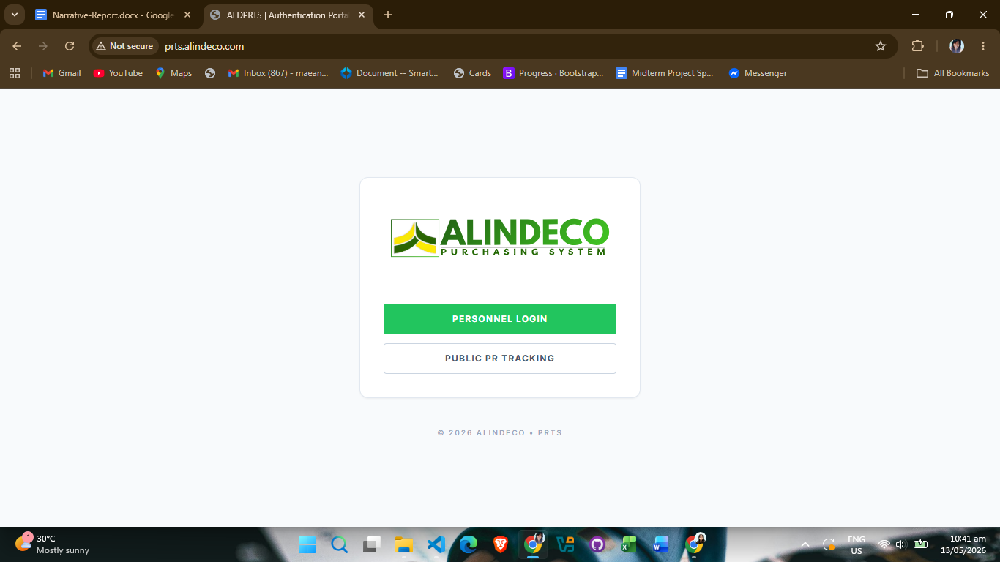
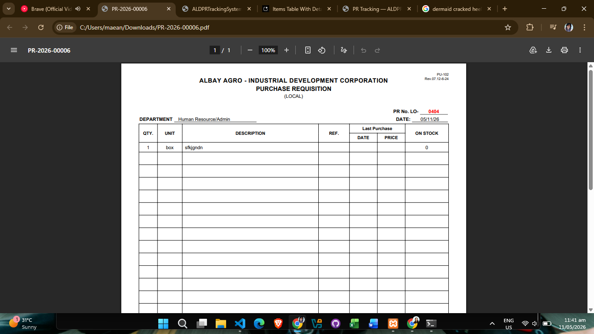
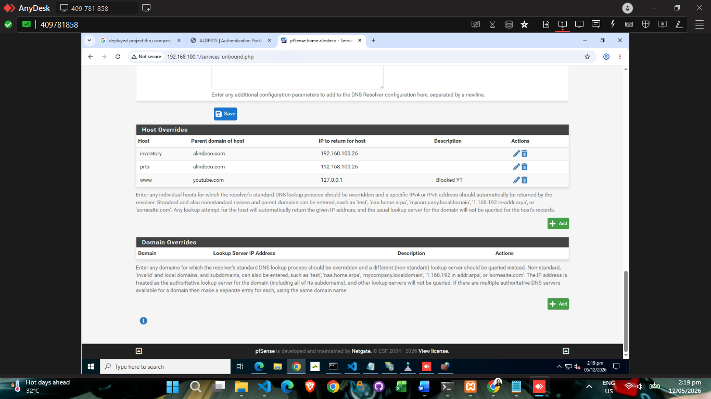
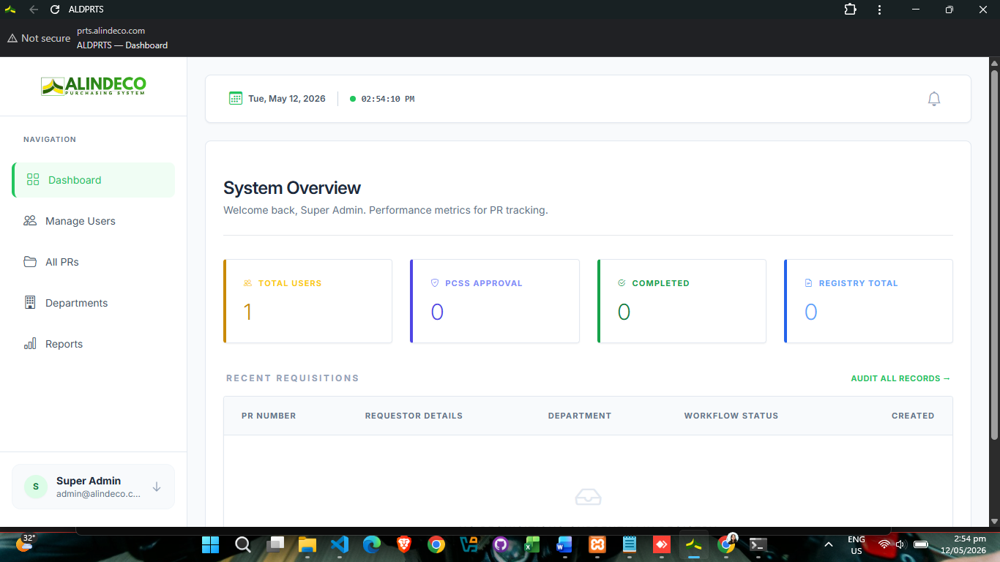
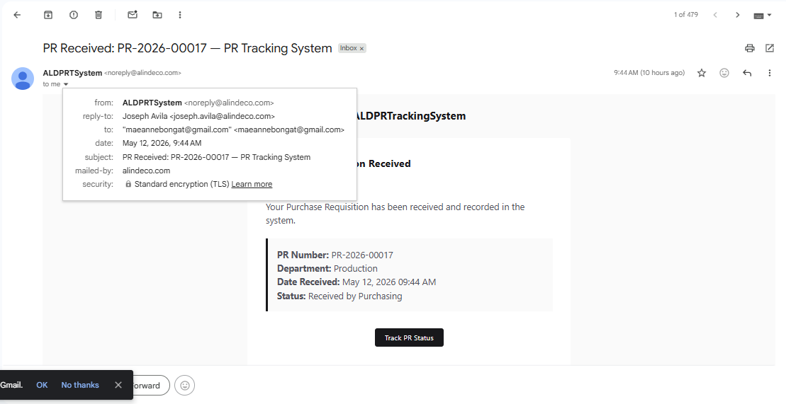
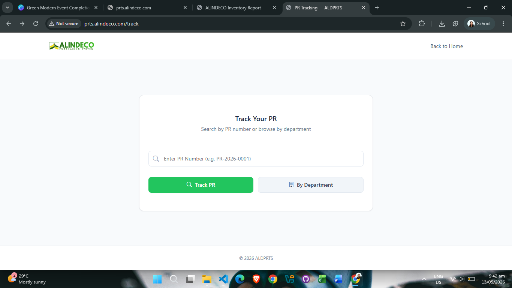
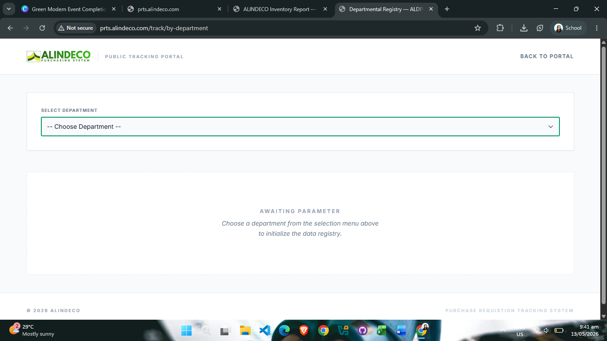

Narrative
Week 13, my final week of the internship, was dedicated entirely to the finalization and deployment of the PRT System (Purchase Request Tracking System). After weeks of development and refinement across previous weeks, the system had reached a stage where it needed comprehensive testing and preparation for production deployment.
The week began with rigorous finalization procedures. I thoroughly tested the entire PRT System to ensure all features, workflows, and functionalities were working as intended. This involved validating the system flow from end to end, ensuring data integrity, and confirming that all user interfaces were functioning correctly. Every component was verified to guarantee the system was production-ready and would perform reliably in a live environment.
Once the system passed all internal testing and validation checks, I proceeded with the deployment phase. The deployment was executed through the company's server infrastructure using Internet Information Services (IIS). This deployment process was significantly smoother and more efficient compared to my initial deployment attempt earlier in the internship. The improved experience reflected both my growing proficiency with deployment procedures and the system's readiness for production implementation.




With the system successfully deployed on the company server, I prepared a comprehensive demonstration of the PRT System for the company stakeholders and team members. This presentation showcased all the key features, workflows, and capabilities that had been built into the system, highlighting how it would streamline the purchase request tracking process and improve operational efficiency.
Following the successful demonstration, the PRT System was officially handed over to the company for production use. This marked the completion of the development cycle and the beginning of the system's deployment in the company's daily operations. The handover included documentation, user training materials, and support information to ensure a smooth transition to live usage.
Beyond the PRT System deployment, the final week of the internship also included critical IT infrastructure and asset management tasks. We installed a new SSD (Solid State Drive) into an all-in-one Lenovo PC, which required careful hardware installation procedures. Following the successful installation of the hardware, the boot process was initialized using Rufus to prepare the system for the operating system installation. The OS was then successfully installed and configured on the new storage device.
After the operating system was fully operational, we proceeded with the installation and activation of Microsoft Office on the newly configured PC. This involved applying the appropriate licenses and ensuring all Office applications were properly activated for company use. Before the end of the business day, we completed the final asset management task by placing QR codes on each designated desktop and employee asset. These QR codes served as inventory and identification markers, enabling efficient asset tracking and management throughout the organization.
The finalization and deployment of the PRT System, combined with these IT infrastructure and asset management tasks, represented the culmination of my entire internship experience at ALINDECO. From initial design and development through to production deployment and official handover, this project encapsulated the full software development lifecycle and demonstrated the practical application of technical skills in a real-world business environment. Additionally, the hands-on experience with hardware installation, OS deployment, and asset management broadened my understanding of IT operations beyond application development.


